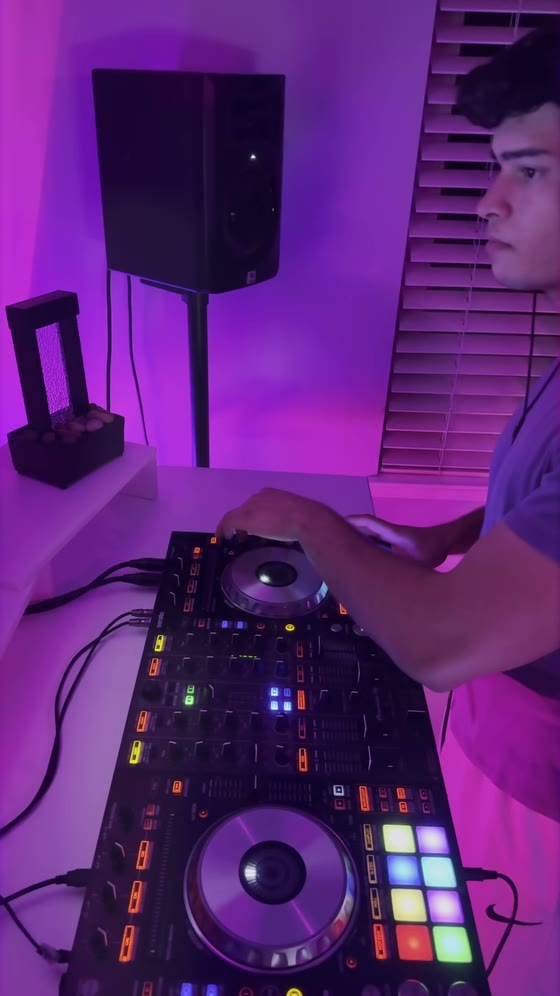

Booking
Aequora · DJ · Sacramento, California

Aequora is Alex Gagnon, a DJ in Sacramento, California. He plays deep and soulful house, progressive house and classic trance, and builds every set as an arc rather than a playlist, with long blends between tracks. His full mixes are on YouTube.
- Plays
- Deep and soulful house, progressive house, classic and progressive trance
- Based in
- Sacramento, California
- Mixes
- 11 full mixes on YouTube, 1 h 2 min to 2 h 17 min each
- Reach
- 1,410 subscribers and 181,027 views on YouTube (Nov 5, 2026)